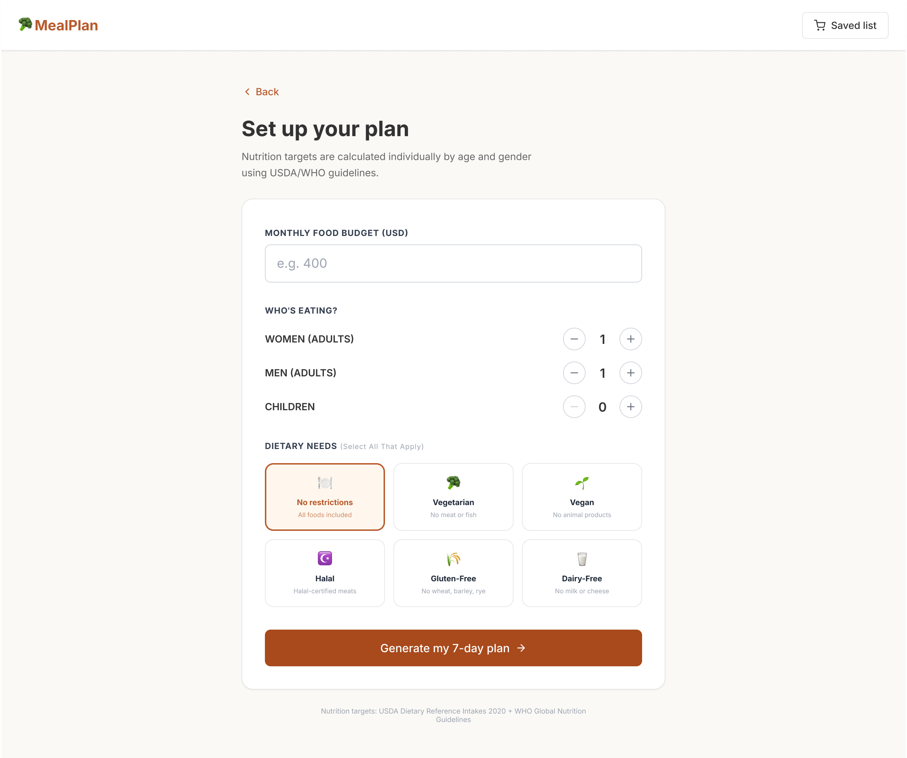
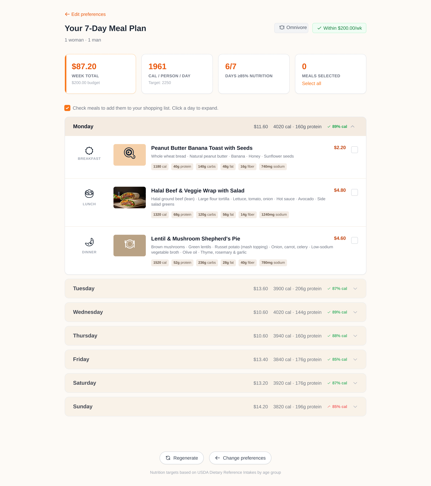
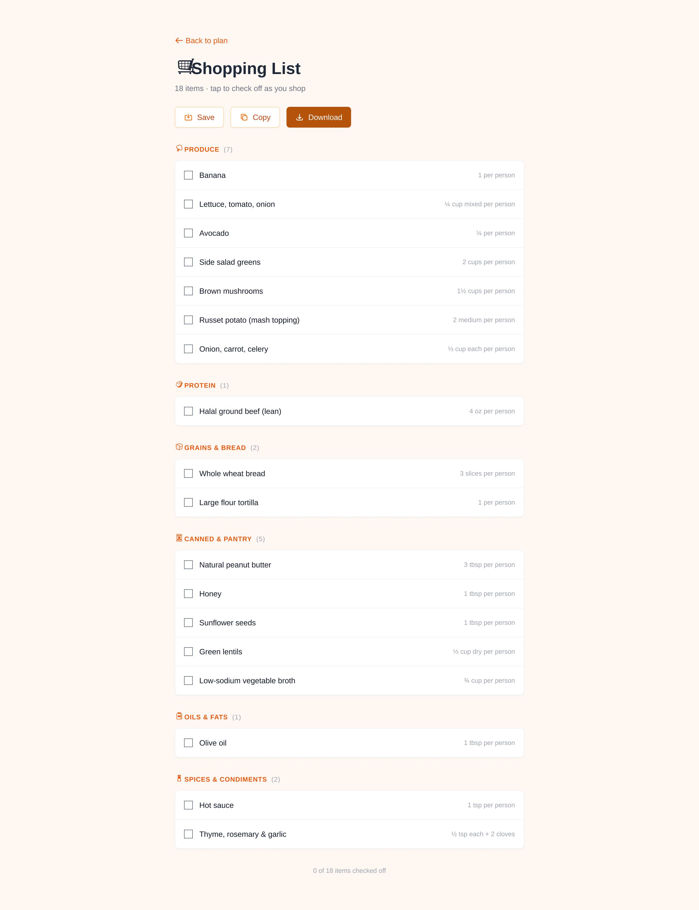

MealPlan
In 2026 the average SNAP benefit is about $6.17 a person per day, and no free tool tells people what to eat this week, what it costs, and where they fall short. In six days I led a four-person team to build MealPlan, a meal planner that turns a real budget into an honest week of food, and says so plainly when the budget can't cover a fully nutritious one.




By law, the most SNAP can give you is the cost of a nutritious week.
SNAP's maximum benefit is pegged to the USDA Thrifty Food Plan, so most recipients start at, or below, the floor for a fully nutritious week. Spending less isn't a mistake; it's the math. Meanwhile grocery prices have climbed and the planning tools that exist aren't built for this budget: they're generic, unpriced, and ignore dietary needs.
That gap is the product. The hard part isn't generating recipes, it's being honest about money without being useless about it.
"Budget too low" isn't an edge case. It's the normal case, so the product has to handle it with dignity, not hide it.
| Tool | What they do | Where they fall short | MealPlan's edge |
|---|---|---|---|
| Google / Reddit | Generic cheap-meal ideas | Not personalized; no nutrition, price, or diet filter; ~45 min of digging | One form: personalized, priced, validated, fast |
| FoodSwitch | Nutrition swaps | Not US-budget focused; no meal planning | Budget-first, full weekly planning |
| FoodiePrep | AI meal planning | Paid; no SNAP-budget alignment | Free, built around SNAP budgets |
| Mealime | Quick dinner ideas | No budget input; no breakfast or lunch | All meals, all budgets |
Two households with the same dead end, for very different reasons.
I wrote the survey and sent it before we built anything, then grounded the product in two composite households at opposite ends of the problem: a single adult on a tight budget, and a family balancing kids' needs against the same shortfall. Reviewing the personas under a critical PM lens is what told us a single persona wasn't enough: a student and a SNAP family behave differently, which is why the household input ended up by age and gender, not a headcount.
Goals
- Eat a real week of food, not just whatever's cheapest
- Spend minutes planning, not an evening
Coping today
- Googles "cheap healthy vegetarian meals," gets generic boards and old threads
- After ~45 minutes gives up and falls back on instant ramen
Goals
- Find gluten-free meals their youngest needs, within budget
- Stop running out of good food mid-week
Coping today
- Shop from memory and rotate the same five staples
- Run out of good food by Wednesday
These personas are composites, built from public USDA, Census, and Federal Reserve data, not interviews. The survey went out June 15; real user research is the immediate next step, and we won't publish quotes until we have them. Holding that line was deliberate, the same honesty the product is built on.
With six days, the first real PM decisions were about what to cut and what to never fake.
I wrote the full PRD, problem, personas, MoSCoW scope, success metrics, and a dependency-mapped timeline, and held the team to a hard feature freeze on June 16. A tight scope is what let four people ship something solid. The decisions below are the ones I'd defend in a review.
Below the USDA minimum, the app still delivers the best plan possible and names the shortfall instead of hiding it. Trust over polish.
Friction kills adoption for this user. Zero barriers between landing and first value.
SNAP families include kids with different caloric needs, so nutrition is checked per person, per day, not a flat headcount.
Halal, gluten-free, and dairy-free run on exclusion lists in our food data, so a plan can't quietly break a restriction.
Anything not locked two days out was a liability. I enforced it in the PRD and timeline, and it held.
The live demo runs on prepared plans across the filters, real output, citing the USDA plan, so nothing breaks on stage.
Reviewing the architecture with Claude as a critique partner surfaced a real bug-in-waiting: the plan was being generated before dietary filtering, so the AI could return foods that violated a restriction. We flipped the order, pre-filter eligible foods, then generate only from that set, before a line was written. Fixing it on paper saved hours of debugging on the clock.
- User accounts
- Food-swap tool
- Plan sharing
- Barcode scanning & health scores
- Budget → 7-day plan
- Cost + nutrition per meal
- Honest shortfall warning
- Six dietary filters · shopping list · regenerate
One short form becomes an honest week of meals.
Three inputs turn into seven days of breakfast, lunch, and dinner, sized to the household, priced to the budget, and checked against nutrition guidelines. Three screens, no account.
Set up your plan
A monthly budget, who's eating (adults by gender, plus children), and any of six dietary needs, multi-select. Nutrition targets are calculated individually by age and gender using USDA/WHO guidelines, so the plan fits the actual table, not an average.
Your 7-day plan, honest, day by day
Every meal shows cost and full nutrition; every day gets a pass/fail flag and the header summarizes week total versus budget and calories per person. When the budget can't reach a full nutritious week, a banner names the gap and cites the USDA minimum, the shortfall is never hidden behind a plan that only looks complete.
Shop once
Check the meals you want and the plan becomes one consolidated list, grouped by aisle with per-person quantities, built to take to the store. Tap to check items off as you shop, and save, copy, or download the list to your phone.
The full walkthrough, deck and live prototype, end to end.
AI for speed, product judgment for direction.
The point of this project, for me, was learning where AI accelerates PM work and where it can't replace it. I brought the opinions; the tools brought the execution speed.
Drafted each PRD section, then had it pushed back on as a senior PM would. It caught the filter-then-generate sequencing flaw before build.
Described what I wanted in plain language, reviewed the output, redirected, iterating on the dietary filters and budget-validation flow myself.
Rapid front-end setup without boilerplate, so the team spent its time on what mattered to the user.
Generates plans from the pre-filtered USDA food list only, with pre-cached fallbacks so a rate limit can't break a demo.
AI is most useful when you have a strong enough opinion to know when it's wrong.
Honesty was the product strategy, and the team strategy.
Writing the survey before the PRD forced me to separate what I assumed users wanted from what they'd actually say. That gap is exactly why household composition became age-and-gender, not a headcount.
The feature freeze held because the PRD was specific enough that "is this in scope?" always had a clear answer. Vague PRDs create scope creep; precise ones prevent it.
When I could prototype a hypothesis myself, I wasn't waiting on a teammate to test it. I could build it, show it, and hand off something concrete. PMs who can build, even roughly, move faster.
Telling users when their budget falls short, instead of faking a complete plan, was the right call. It's the difference between a tool that builds trust and one that quietly erodes it.
The honest call, naming the gap instead of hiding it, was the whole product. Everything else was execution.